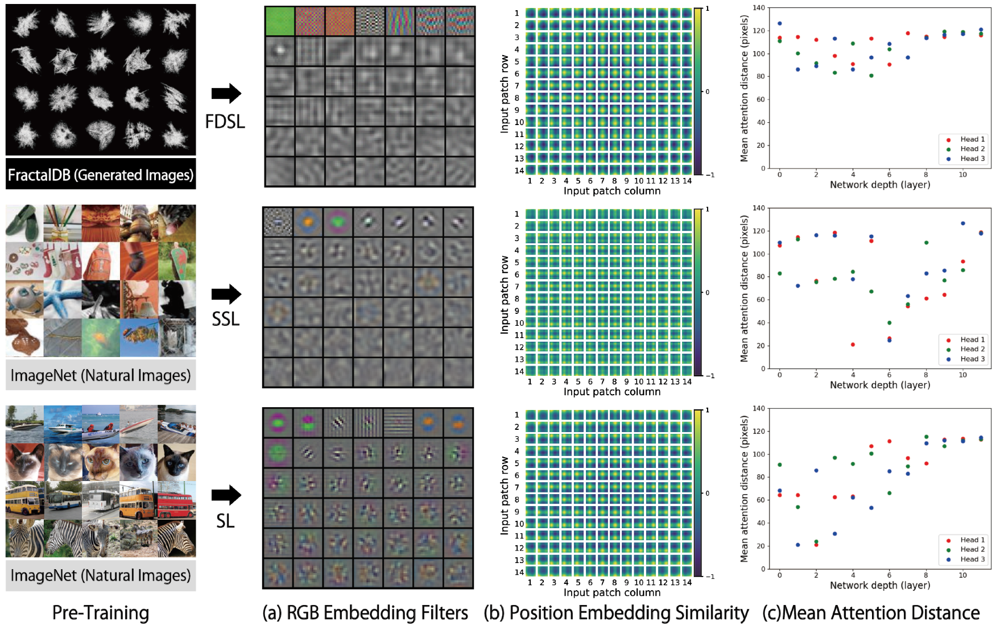
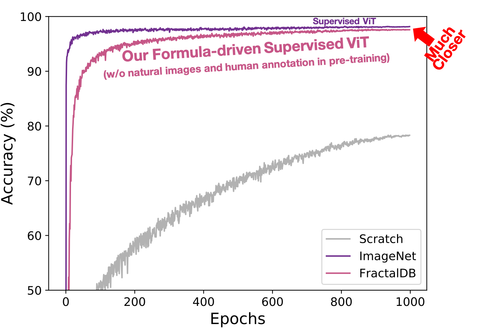
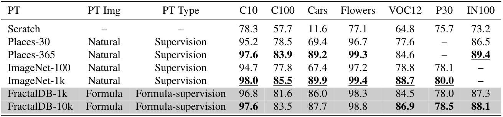
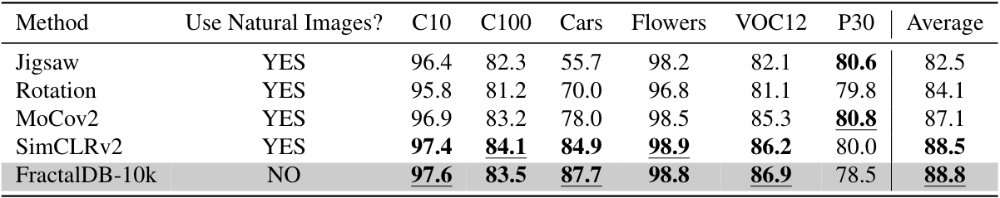
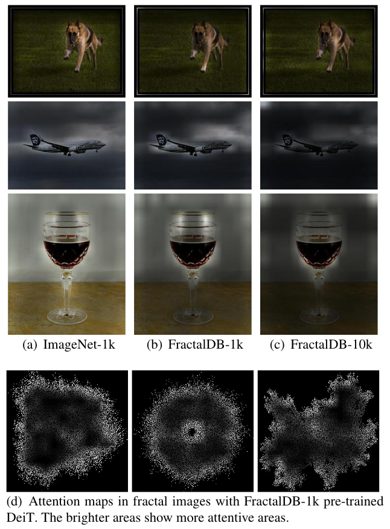

Can Vision Transformers Learn
without Natural Images?
arXiv pre-print
Kodai Nakashima1 Hirokatsu Kataoka1 Asato Matsumoto1,2 Kenji Iwata1 Nakamasa Inoue3
1: AIST 2: Univ. of Tsukuba 3: TITech
Paper
Code
Dataset

Abstract
Can we complete pre-training of Vision Transformers (ViT) without natural images and human-annotated labels? Although a pre-trained ViT seems to heavily rely on a large-scale dataset and human-annotated labels, recent large-scale datasets contain several problems in terms of privacy violations, inadequate fairness protection, and labor-intensive annotation. In the present paper, we pre-train ViT without any image collections and annotation labor. We experimentally verify that our proposed framework partially outperforms sophisticated Self-Supervised Learning (SSL) methods like SimCLRv2 and MoCov2 without using any natural images in the pre-training phase. Moreover, although the ViT pre-trained without natural images produces some different visualizations from ImageNet pre-trained ViT, it can interpret natural image datasets to a large extent. For example, the performance rates on the CIFAR-10 dataset are as follows: our proposal 97.6 vs. SimCLRv2 97.4 vs. ImageNet 98.0.
Contributions
We clarify that the FractalDB under the FDSL framework is more effective for ViT compared to CNN. The performance of FractalDB-10k pre-trained ViT is similar to those approaches with supervised learning, and slightly surpasses the self-supervised ImageNet with SimCLRv2 pre-trained ViT. Here, on the CIFAR-10 dataset the scores are as follows: FractalDB 97.6 vs. SimCLRv2 97.4 vs. ImageNet 98.0. Importantly, the FractalDB pre-trained ViT does not require any natural images and human annotation in the pre-training. The following graph illustrates that FractalDB pre-trained ViT exhibits much higher training accuracy in early training epochs. The accuracy of FractalDB is much closer to that of ImageNet pre-training.

Experimental Results
We compare the performance of FractalDB pre-trained ViT with {ImageNet-1k, ImageNet-100, Places-365, Places-30} pre-trained ViT on representative datasets inaddition to training from scrach with additional fine-tuning datasets. ImageNet-100 and Places-30 are randomly selected categories from ImageNet-1k and Places-365. Moreover, we also evaluate SSL methods with {Jigsaw, Rotation, MoCov2, SimCLRv2} on ImageNet-1k. Here, we show the effectiveness of the proposed method in compared properties, namely human supervision with natural images and self supervisionwith natural images (see also the following tables).


Attention map
The following figures illustrate attention maps in ViT with different pre-training datasets. The FractalDB-1k pre-trained ViT focuses on the object areas (Figure (b)) as well as ImageNet pre-training (Figure (a)). Moreover, the FractalDB-10k pre-trained ViT looks at more specific areas (Figure (c)) compared to FractalDB-1k pre-training. Figure (d) shows attention maps in fractal images. From the figures, the FractalDB pre-training seems to recognized by observing contour lines. We believe that the recognition of complex and distant contour lines enabled the extraction of features from a wide area.

Citation
@inproceedings{Nakashima_arXiv2021,
author = {Nakashima, Kodai and Kataoka, Hirokatsu and Matsumoto, Asato and Iwata, Kenji and Inoue, Nakamasa},
title = {Can Vision Transformers Learn without Natural Images?},
booktitle = {CoRR:2103.xxxxx},
year = {2021}
}
Dataset Download
-
FractalDB-1k (1k categories x 1k instances; Total 1M images).
[Dataset (13GB)]
-
FractalDB-60 (60 well-known categories x 1k instances; Total 60k images).
[Dataset (1.2GB)]
Acknowledgement
- This paper is based on results obtained from a project subsidized by the New Energy and Industrial Technology Development Organization (NEDO).
- Computational resource of AI Bridging Cloud Infrastructure (ABCI) provided by National Institute of Advanced Industrial Science and Technology (AIST) was used.